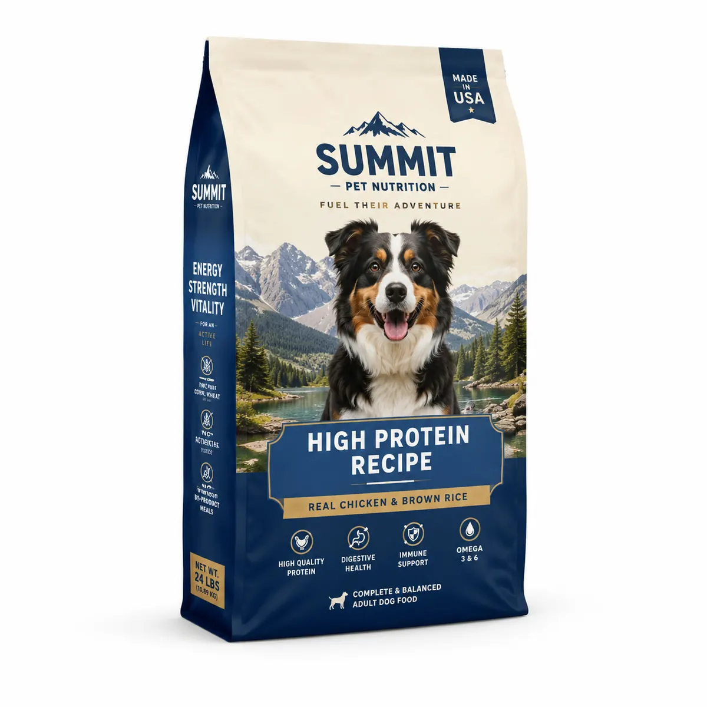

Pet Food Bags — factory-direct from Shenzhen with MOQ 500 PCS, 24-hour RFQ response, free dielines and worldwide shipping. Custom size, materials (PET / AL / PE barrier films, kraft paper with PLA liner, metallized films), printing and finishes; sampling in 5–7 days after artwork approval.
Commercial-grade product visuals and B2B packaging specifications for global brands. Custom size, structure, material, logo, finish and accessories are available.
| Business Model | B2B RFQ only |
| MOQ | 500 PCS |
| Customization | Size, material, color, logo, finish, insert, barcode |
| Contact | Sales Manager: Lisa Wu Email: lisa@colorprintingpackage.com |
The table below is written for industrial RFQ comparison. Final production specification is confirmed by sample approval, filling test and export packing test.
| Recommended material structure | PET 12µm / VMPET 12µm / PE 100–130µm; PET 12µm / AL 7µm / PE 110µm for high-fat pet food |
|---|---|
| Total laminate thickness | 120–180 µm depending bag volume and kibble edge hardness |
| Oxygen barrier OTR | ≤ 1.0 cc/m²·day for metalized structure |
| Moisture barrier WVTR | ≤ 1.0 g/m²·day for metalized structure |
| Seal strength | ≥ 45 N / 15 mm for heavy fill weights |
| Zipper type | Heavy-duty PE zipper 8–12 mm; slider zipper optional for 2 kg+ bags |
| Puncture resistance target | ≥ 8 N for laminated pouch body, subject to final structure |
| Bag style | Flat bottom pouch, quad seal bag, stand-up pouch with handle hole optional |
| Drop test | Filled bag 1.0 m drop test on 6 faces for export packaging validation |
| Surface finish | Matte, gloss, anti-scratch matte, spot UV window or logo |
| MOQ | 500 PCS per custom size / artwork |
| Artwork file | AI / PDF / PSD accepted; vector logo required; 3 mm bleed |
| Color tolerance | ΔE ≤ 3.0 against approved digital proof |
| Dimension tolerance | ±2 mm for flexible packaging; ±1.5 mm for paper boxes unless stated |
| Quality inspection | AQL 2.5 for major defects; random inspection before shipment |
| RFQ data required | Size, product weight, filling condition, artwork, quantity, destination port/country |
Barrier selection depends on fat content, aroma sensitivity, target shelf life, pack size and storage conditions. Oily products may need stronger oxygen and aroma protection.
Flat-bottom and side-gusset formats are often evaluated for larger fills because they provide usable volume and shelf stability. Handle, zipper and puncture requirements must be tested with the real fill weight.
Confirm fill volume, drop resistance, seal and zipper strength, puncture behavior, print rub and export-carton packing with the intended product weight.
Click below to contact us quickly by WhatsApp or email. We can help with dieline, samples, printing, materials and worldwide shipping.
💬 Chat on WhatsApp ✉ Email Inquiry lisa@colorprintingpackage.comSend your product dimensions and quantity to lisa@colorprintingpackage.com or message us on WhatsApp — we reply within 24 hours.